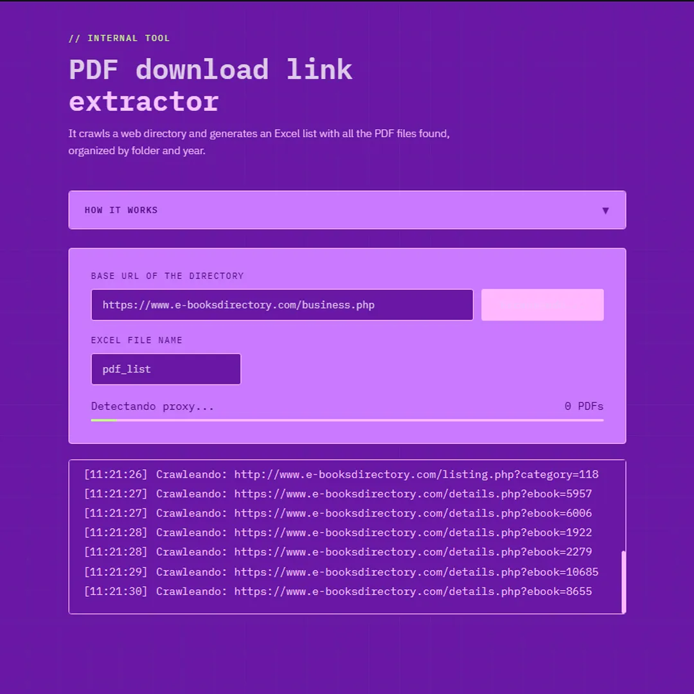
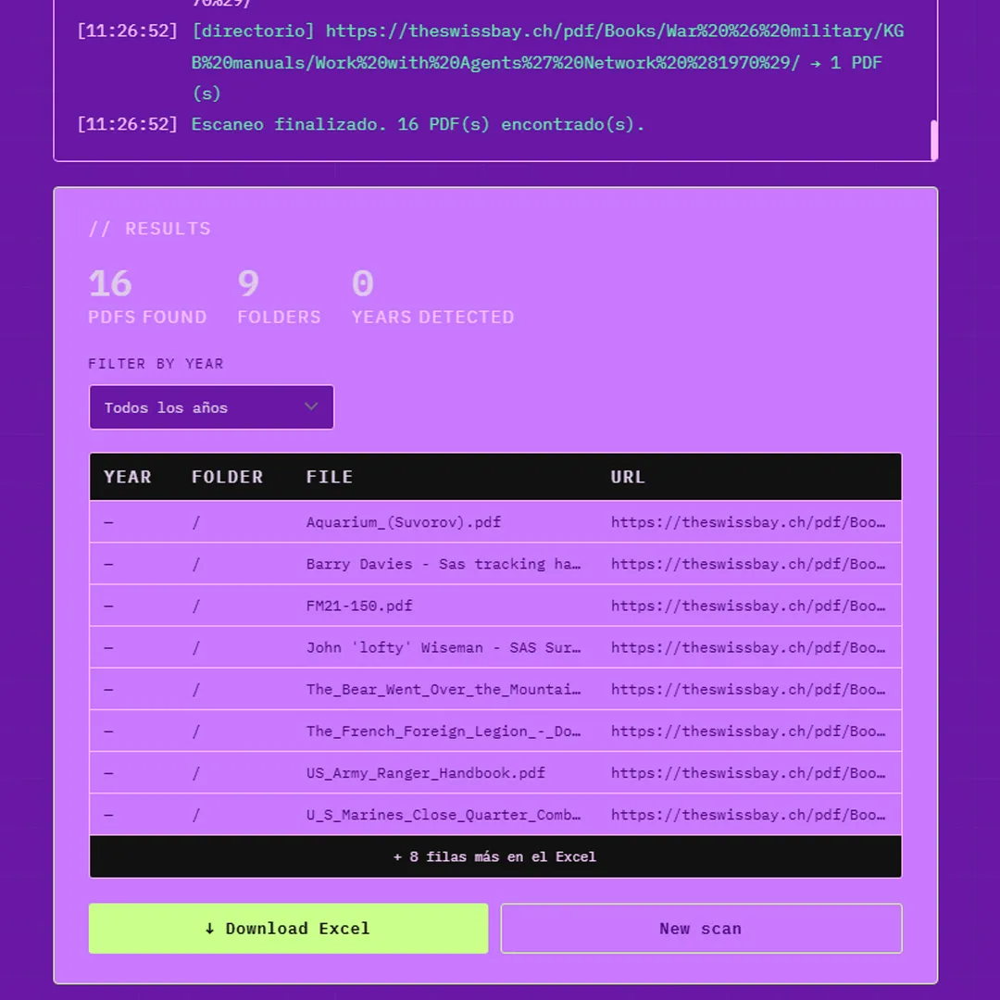

Automating a Manual Document Indexing Task with a Browser-Based Scraping Tool
Project Overview
I designed and built a browser-based tool that automatically crawls government document directories and exports a structured Excel spreadsheet with all PDF download links — reducing a task that would have taken days to minutes.
Context & Contraints
The project was developed for a national government institute that publishes hundreds of official legal documents on its public website, organized by document type across multiple directories. The archive has grown over several years to more than 500 files.
No internal document management system exists for this archive. Files live on a public web server with no structured index or database behind them.
The solution had to work without modifying the existing server infrastructure, without requiring installation or technical knowledge from the end user, and without a dedicated budget or development team.
Problem
A request came in to build an Excel spreadsheet mapping every document's title, year, and download URL — to feed a future national database. With no existing tool to automate this, the task would have fallen to a single person manually opening each directory, locating each file, and copying each link one by one. For over 500 documents across multiple years.
The problem wasn't technical complexity — it was operational friction that didn't need to exist.
Design Objectives
- Eliminate manual effort from a repetitive, error-prone task
- Make the tool usable by non-technical staff with no setup or installation
- Deliver output in the format already required: a structured Excel file
- Keep the solution self-contained and deployable without backend infrastructure
Key Decisions
Decision 1 - A tool, not a process
The initial request was for a spreadsheet. The real problem was how to produce it without consuming days of someone's time. Reframing the ask from "build a spreadsheet" to "eliminate the manual work behind it" opened the space for a better solution.
Decision 2 - Zero friction for the end user
The person using this tool is not technical. Any solution that required installation, configuration, or command-line interaction would have failed regardless of how well it worked. The constraint wasn't technical — it was adoption.
Decision 3 - Output in the format already required
Rather than introducing a new format or workflow, the tool outputs exactly what was requested: a structured Excel file. Meeting the existing requirement removed any need to negotiate the deliverable.
Decision 4 - Scope containment
With no budget, no backend, and no IT support available, the solution had to be self-contained. Defining what the tool would not do — no database, no login, no server-side logic — was as important as defining what it would.
Solution & Flow
The tool is a single HTML file deployable to any static host. The user pastes a URL, clicks scan, and the tool handles the rest: detects the page type, traverses directories or crawls internal pages, extracts every PDF link, and presents results with a year filter. Export generates a .xlsx file with four columns — year, folder, filename, and download URL — ready to be handed off or imported directly.
A real-time log shows progress during the scan, which builds confidence for users who aren't sure what's happening in the background.
Results and Learnings
Results
- Task reduced from an estimated 2–3 days of manual work to under 5 minutes
- Usable by non-technical staff with no setup required
- Delivered within a single working session from problem identification to production
Learnings
- In resource-constrained public sector environments, the most valuable design skill is knowing how to scope a problem so that a real solution is actually viable
- Correctly identifying this as a workflow problem — not a data problem — was the decision that made everything else possible
- Using Claude (Anthropic) as a development agent allowed me to stay focused on product decisions while accelerating execution, which is increasingly part of how a Staff Designer operates
Role
Product design, solution architecture, and AI-assisted front-end development.
I identified the problem, defined the constraints, made all product and UX decisions, and directed the implementation using Claude as a development agent. The entire project — from first conversation to deployed tool — was completed in a single session.
Gallery


